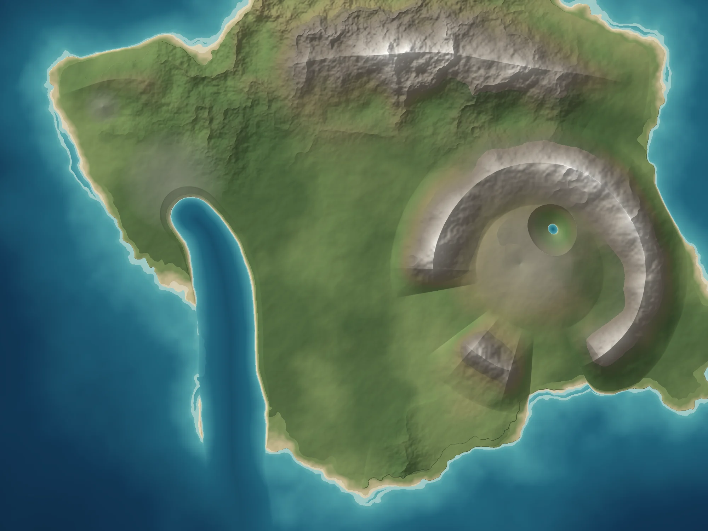

Every Poem’s Ground Plays the Film & Mounts Our 90 Multiplane Scenes
Previously, clicking WORLDTEXT GROUND opened a bare .landpack.json heightfield with grey boxes and none of our assets, while PLAY THE REAL CITY showed generic "storm gate keeper" placeholders. Now every scouted stage and WorldText route is compiled with our 90 custom seamless sidescrolling scenes (s0_ext.webp..s5_ext.webp), continuous poem_tape.webp ground ribbons, playable film portals (P01-001.mp4..), cut-out props, and the 🐕 Interactive AI Dog Helper.

Evolved Foundry Worlds & Topography Inside the 3D Terrarium
Each Foundry world has an evolved topography genome (harbor, estuary, perceived island, caldera, ridge), 3 zones (Baltimere, The Center, Atlantis), palimpsest routes, and 14 poem camera stands. We compiled the elite Foundry worlds directly into 12-bit 3D Terrarium .landpack.json cartridges with 280 3D buildings and 28 inverse-topology camera wedges. Hover any map to toggle its Palimpsest, and click ▶ MOUNT IN 3D TERRARIUM to drive or side-scroll through it!
Search Every Shot by Stanza, Framing, Light Hour & What’s in Frame
Every spoken line of the 14 poems steers a 3D camera `(x, y, z, heading, fov)` through the Foundry world. Filter by shot kind, hour of light, what is measured in frame, poem, or world — and launch any shot directly into the 3D Terrarium camera or ask the 🐕 Dog to fetch it!
The Shots Shape the Land — Sculpted Terrain in the 3D Terrarium
Instead of growing a world and photographing it, Inverse Topology starts from our best MARKOV_POET clips, generated stills, Cineosis archive frames, and Halfworld shots — segments them into sky, water, city, street, forest, beach, and rock — and sculpts the 3D world’s heightfield so the terrain gives back the shot. Hover any reference below to inspect its panoptic segmentation, or open its sculpted terrain in the 3D Terrarium!